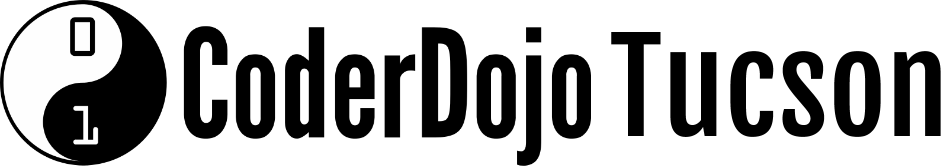

CoderDojo Tucson is the Tucson, Arizona dojo of the CoderDojo Foundation.
The CoderDojo movement believes that an understanding of programming languages is increasingly important in the modern world, that it’s both better and easier to learn these skills early, and that nobody should be denied the opportunity to do so.
Anyone aged seven to seventeen can visit a Dojo where they can learn to code, build a website, create an app or a game, and explore technology in an informal, creative, and social environment.